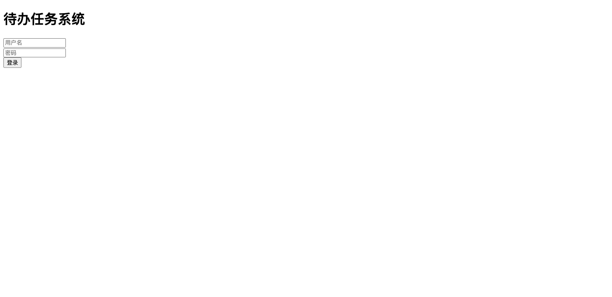
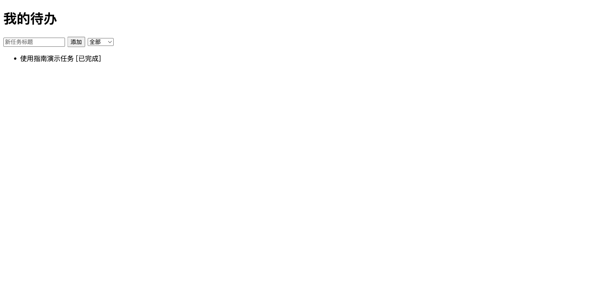
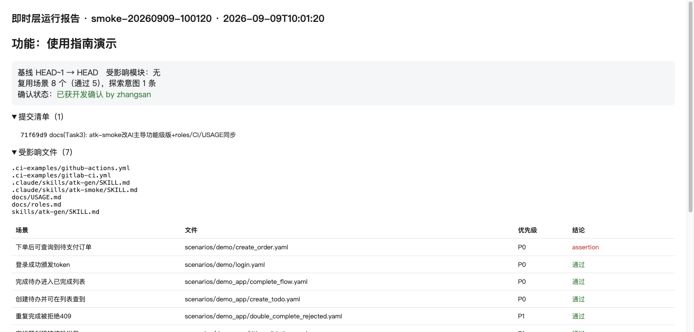
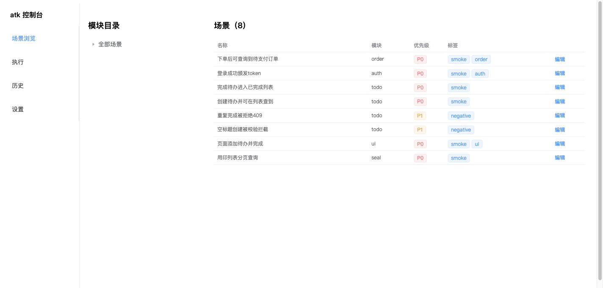

atk = AI 原生双层测试框架。AI 全程主导 plan→run→record→report→gate； 开发只在 两处介入：① 审 AI 起草场景的 expect；② 整单确认结果。 以下截图均为本机实测（demo 待办应用 + smoke-20260909-100120 真实运行记录）。命令共 12 个。
# 公共托管版（包名 dev2atf，命令仍是 atk）
uv tool install dev2atf
uv tool install "dev2atf[console]" # 带 Web 控制台
# 新项目接入
cd /path/to/你的项目
atk init # 只建缺失文件，绝不覆盖
# 再改 config/environments.yaml（环境地址）与 config/modules.yaml（代码→模块映射）editable 本地联调版与卸载方法见 docs/USAGE.md §2。
开发只需给功能描述（或基线），AI 一条命令建单并跑完确定性部分：
atk smoke --base main --env staging --title "下单链路"实测输出（功能标题 + run_id + 门禁结论 + 待办清单一次给全）：
已并入运行记录 smoke-20260909-100120（模块 全量）
报告：reports/runs/smoke-20260909-100120/report.html
✓ 变更一致（7 个文件）
✗ 用例失败 2 个: 下单后可查询到待支付订单, 用印列表分页查询
⚠ 未经开发确认（仅告警，不拦截）
门禁结论：拦截
待办清单：
- 失败场景：下单后可查询到待支付订单, 用印列表分页查询（2 个待修复，见上断言详情）
- 无覆盖意图：需用 ego-browser 实测新意图并 atk record smoke-20260909-100120 回填
- 草稿评审：如有 scenarios/**/gen-* 草稿场景需人工评审 expect 后入库输出中的 2 个失败是跨环境场景在 demoapp 下的预期失败；“未经开发确认”只告警、不拦截 gate。
AI 用浏览器实测页面意图（下图：登录 demo 应用 → 添加任务 → 完成后显示“已完成”），截图即证据：

图1：被测系统登录页（alice / secret123）

图2：添加“使用指南演示任务”并点击完成后，条目变为已完成
atk record smoke-20260909-100120 --title "页面添加待办并完成" --status pass \
--note "登录后添加使用指南演示任务并完成，列表显示已完成" \
--evidence docs/assets/demo-todos.png
# 已记录：页面添加待办并完成 [pass] 证据 1 项| status | 含义 | gate |
|---|---|---|
| pass | 断言成立 | 放行项 |
| fail / suspect | 复现问题 / 疑似（note 写重现步骤） | 拦截，需人定性 |
| blocked | 环境/权限原因无法执行 | 不拦截，仅公示 |
报告自动带 功能标题、提交清单、确认状态 三段（开发一眼看全）：

图3：报告页——功能“使用指南演示”、提交清单、已获开发确认、场景结论表
atk review smoke-20260909-100120 --by zhangsan --verdict approve --note "演示确认"
# 已确认：smoke-20260909-100120 by zhangsan [approve] 演示确认reject 必须带 note（退回 AI 返工）；确认状态按最后一条判定，可覆盖；无确认 gate 只告警 ⚠ 未经开发确认，不拦截（SLA：24h 内确认，超时视发布阻塞）。
atk context --base main --context-out /tmp/ctx.md # 确定性上下文包：提交+补丁+模块+现有场景
# 对 Agent 说“为这次改动补测试场景”（atk-gen skill 起草到 scenarios/<module>/gen-*.yaml）
atk validate && atk run --tags ai-generated # 校验+先实测草稿（技术正确性）
# 开发审 expect 与实测结论（介入点1）→ 通过后 atk review-draft approve 转正入库参与门禁规则：只增不改旧文件；接口/字段必须来自 diff，禁臆造；expect 写具体码+业务字段。
atk console（需 [console]）：场景树浏览、表单/源码双模式编排、SSE 实时执行、运行历史、定时任务。

图4：控制台——8 个场景按模块/优先级列表展示
| 命令 | 谁用 | 作用 |
|---|---|---|
| smoke | AI | 一键：plan→run→report→gate |
| context | AI | 变更上下文包，供起草场景 |
| plan / run / report / gate | AI·CI | 分步命令（CI 备选） |
| record | AI | 回填 UI 实测结论+截图 |
| review | 开发 | 整单确认（介入点2） |
| review-draft | 开发 | 评审 AI 草稿：approve 转正 / reject 移走（介入点1落盘） |
| validate | AI·开发 | 场景合法性（介入点1前置） |
| init / console | 开发 | 建骨架 / 可视化控制台 |
文字版详见 docs/USAGE.md，角色与 SLA 见 docs/roles.md，发布流程见 docs/PUBLISH.md。